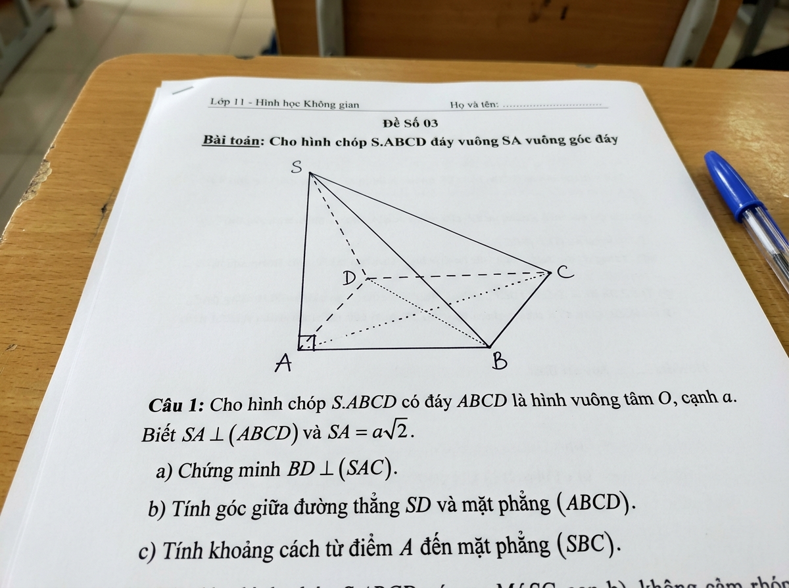

🔮 Trợ Lý Tự Động Nhận Diện & Vẽ Hình
AI NLP Engine
Đề Chóp S.ABCD (SA ⊥ Đáy)
Đề Thi THPT QG
Lăng Trụ ABC.A'B'C' (Đáy Vuông)
Vở Ghi Bài Tập
Kéo thả ảnh đề bài hoặc Bấm để tải ảnh lên / chụp
Hỗ trợ ảnh chụp vở ghi, đề thi in, viết tay📐 Phân Tích Thông Số Hình Học & Tọa Độ Hóa:
💡 Dùng chuột kéo thả các điểm đỉnh A, B, C để thay đổi hình dạng tức thì! Lăn chuột để phóng to/thu nhỏ.
📚 Kho Đề Bài Hình Học Chuẩn Tuyển Chọn (Lớp 11 - 12 THPT)
Bấm vào bất kỳ bài toán nào để phần mềm tự động nạp đề và mô phỏng 3D ngay lập tức.
💡 Dùng chuột kéo thanh Piston sang trái/phải hoặc bấm nút "Nung Nóng/Làm Lạnh" để quan sát chuyển động phân tử và biến đổi áp suất!